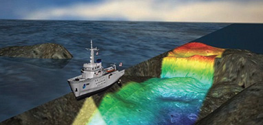
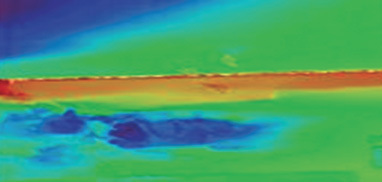
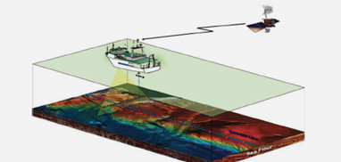
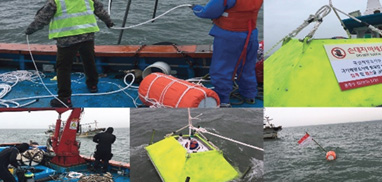

해양측량 / 데이터베이스
SURVEY/DATABASE
연안해역의 개발 및 보전을 위한 정밀해양측량 및 해양물리탐사,
해양관측을 수행함은 물론, 해도제작 및 주제도 제작 등을 수행하여
최적의 해양공간 서비스를 제공하고 있습니다.
-
정밀해양측량
 수심측량, 멀티빔측량, 헤저면영상조사, 해저지층탐사,
해양조사, 인공어초 조사 등의 성과를 이용하여 선박의
안전한 항해 및 항만공사, 군사작전 및 해양개발에
이용 합니다. -
해양 GIS
 해양에 대한 사회적, 경제적, 환경적, 정치적 관심이
증대함에 사용자 요구에 맞는 각종 주제도 제작 등을
통해 다양한 자료간 융합 및 활용 확대를 위해
이용합니다. -
해양물리탐사
 최신의 기술을 적용하여 고해상도의 자료 취득을
통해 해저의 지층구조 및 해저면의 상태를 파악하여
해양개발과 해양구조물건설을 위한 기초자료를 제공합니다. -
해양관측
 조석, 조류 및 파랑 등의 관측자료 취득을 통해
해역의 특성 을 파악 및 분석하여 해양 예보 및 해양
설계에 필요한 정보를 제공합니다.